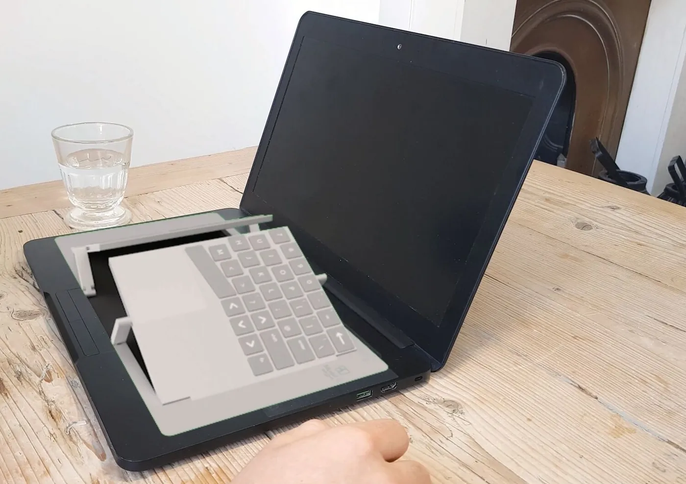
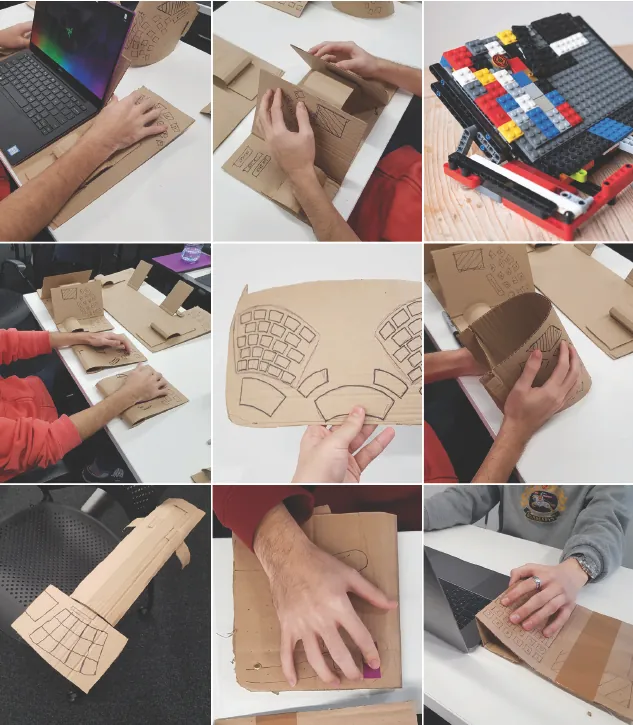
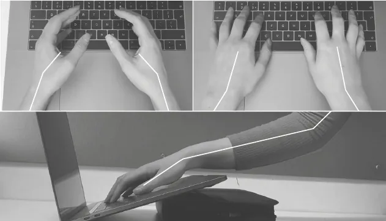
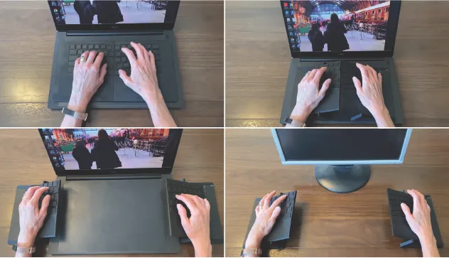
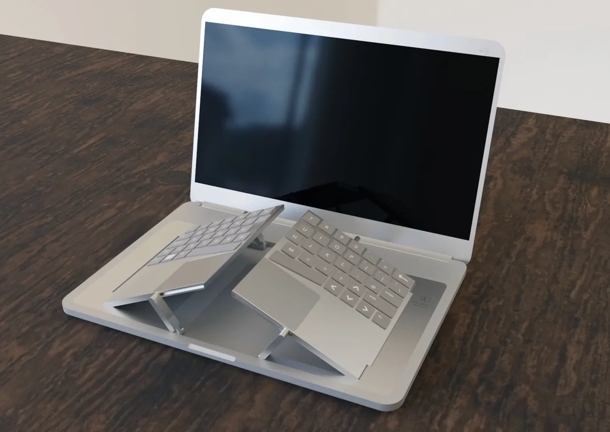
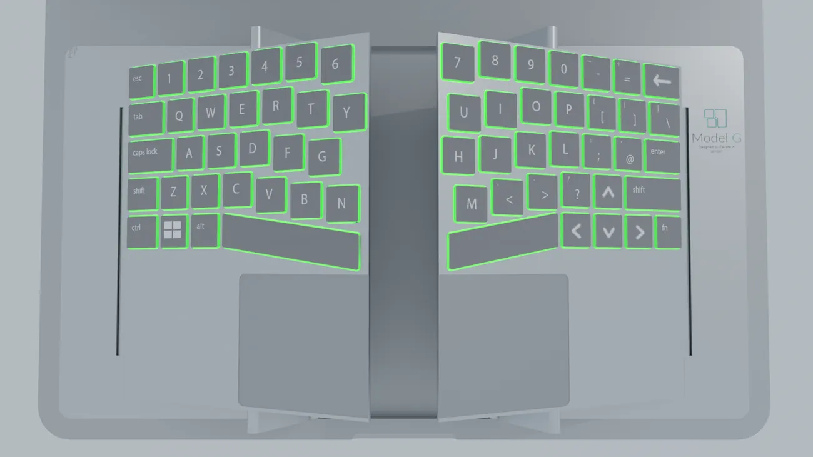

Inclusive Product Design2019–20
Model G
Human-Centred Keyboard Design
How might we make mobile devices more ergonomic?

When current mobile devices are used intensely (but correctly) they can lead to wrist strain and RSI.
Phones and laptops cause problems, with laptops leading to more severe pain and discomfort. The industry is moving towards dual screen laptops which are a step in the wrong direction. On top of the positioning and rotation problems, these laptops would likely have even lower key travel, potentially misleading users to press too hard when typing.

Lo-Fi Model User Testing
I did design development via lo-fi cardboard prototyping. There were many features to test, such as; a split keyboard, elevated sides, key placement, trackpad adjustment, the Joypad (mix of trackpad and joystick) and curved keys. This allowed me to see which parts of current keyboards were uncomfortable, and which were comfortable because they were ingrained but would need to change to make the keyboard more ergonomic. This main section of modelling was supplemented with developed design sketches.

Research Insights
Angled or vertical positions reduce the chance of pinching nerves and carpal tunnel syndrome. A neutral position prevents wrist strain through radial or ulnar deviation. A negatively sloped keyboard helps to minimise muscle load and wrist stretching.

Changing Form
The keyboard has three main positions. Flat (normal), raised and raised with split. These work to minimise muscle load and wrist stretching for medical best positioning. The action used can be changed to prevent repetitive strain. Its portability allows it to be used with a laptop or at a desktop, recognising the keyboard as the very personal item it should be. Learning is staged, with the flat form still being extremely approachable and accessible.
Product Visualisation
The project had a big divide between looks-like and works-like prototypes. I had no access to workshops to make a convincing looks-like prototype, so an FDM printer was used to gain a rudimentary model. It was especially important during Covid-19 that the product look as real as possible digitally. To achieve this I began to learn Blender rendering and animation, allowing me to visualise elements such as the RGB backlit keys to facilitate staged learning.

